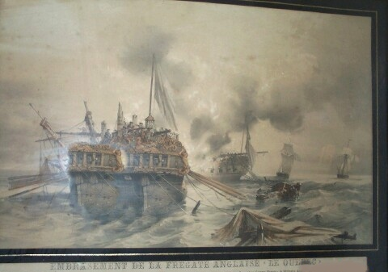
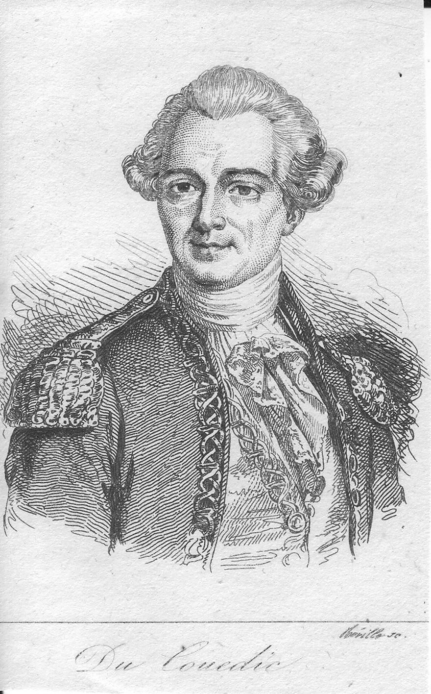
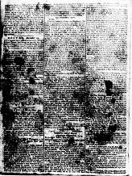
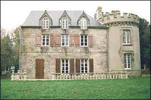
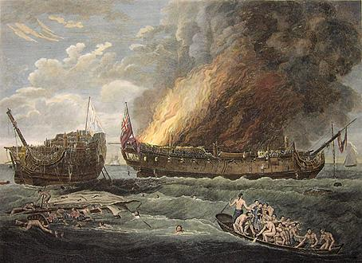
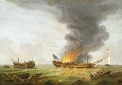
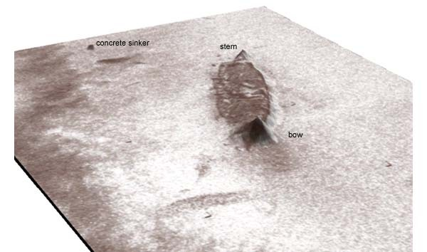

Chanson du pilote
The Steersman's Song
Dialecte de Haute Cornouaille
|
Ni Luzel, ni Joseph Loth (comme le remarque Francis Gourvil dans une note, p. 402 de son "La Villemarqué") ne rangent ce chant historique dans la catégorie des chants inventés . NOTE: Le Peintre Armand LANGLOIS s'est inspiré de ce chant et de la présentation qui en est faite sur ce site, pour la réalisation des fresques du parking Effia de la gare Sud de Nantes qui évoquent Nantes et la marine royale au XVIIIème siècle. Cliquer ICI |
 Le 'Québec' démâté et la 'Surveillante' |
Neither Luzel nor Joseph Loth (as stated by Francis Gourvil in a note on page 402 of his "La Villemarqué") includes this historical song on the list of the songs invented by La Villemarqué. NOTE: The artist Armand LANGLOIS availed himself of the present song and comments in elaborating frescoes to the topic Nantes and the French Royal Navy in the 18th century for the Effia parking lot underneath Nantes South Station. Click HERE |
Ton
(Mode hypophrygien)
Texte du Barzhaz Breizh
| Français | English |
|---|---|
|
1. À Sainte-Anne je suis allé,
Lorsque vint l'ordre d'embarquer. - A Sainte-Anne viens, A Sainte-Anne viens, A Sainte-Anne viens Prier, ce n'est pas en vain. 2. Adieu donc, Kervignac, mon bourg; Je serai bientôt de retour. A Sainte-Anne, viens... etc. 3. Je suis second pilote à bord De 'La Surveillante' aux flancs d'or, 4. Revêtus de cuivre brillant Qu'on dirait d'or ou d'argent blanc; 5. On dirait comme des atours Pour se rendre au bal de la cour. 6. N'est-il pas charmant de danser Avec pour fifre un canonnier? 7. - Canonniers, un bel air, ma foi, Que nous dansions, ma dame et moi! 8. Sonnez, sonneurs, sonnez gaiement, Pour que nous dansions rondement! - 9. Et voilà qu'en pleine harangue Le canon interrompt le Mangue, 10. Que s'approche un navire anglais, Qu'une bordée nous a frôlés. 11. Il battait rouge pavillon; Sur chaque bord seize canons. 12. - Ils ont donc trente -deux canons: C'est autant que nous en avons. - 13. Nous lui lâchons notre bordée; Sa quille en est tout ébranlée. 14. Fais ton devoir , barre mignonne! Suis bien les ordres qu'on te donne! 15. Mon petit timon, maintenant, Le canon tire à bout portant! 16. Sans relâche les boulets tonnent. Coup sur coup le canon résonne! 17. Les navires sont comme en sueur; La mer se couvre de vapeur. 18. Les bateaux ont les flancs ouverts; Et les mâts tombent dans la mer. 19. Le pont est jonché de poulies Comme les glands après la pluie. 20. Quatorze boulets à fleur d'eau; Nous les leur rendons aussitôt. 21. Cinq heures de combat déjà. Le canonnier ne faiblit pas. 22. Le canonnier n'est pas lassé, Non, pas plus que le timonier. 23. Mais le capitaine est bien las; Le voilà en piteux état! 24. Son flanc saigne. Il souffre des yeux, Atteint au front d'un coup de feu. 25. Pourtant, sur le gaillard d'arrière C'est lui qui dirige l'affaire. 26. Son noble sang a beau couler, On ne le verra pas flancher. 27. Son sang coule à flots! Kergoaler Affirme sa mâle valeur! 28. Tous sont grièvement blessés. Nul ne songe à se reposer. 29. Tous sont blessés, tous, hormis un Qu'en ce chant je ne nomme point. 30. Il y a bien cinq pieds d'eau dans La cale et presque autant de sang! 31. - Cher commandant, viens, viens et vois! La drisse pend; le drapeau choit! 32. Entends ce que dit le Godon: "Ils ont amené pavillon!" 33. - Amener! Je n'en ferai rien, Tant que ce sang sera le mien! - 34. Le Mang l'entend, et vite il mon- Te dans les haubans d'artimon; 35. Tête haute, au milieu des balles, C'est son mouchoir blanc qu'il étale. 36. - Non, nous n'avons point amené; Le pavillon blanc est hissé!- 37. Le Breton n'amène jamais, Comme ferait Johnny l'Anglais! 38. Le capitaine anglais est mort Comme un homme vaillant et fort. 39. Mort comme un homme, il a brûlé En chemise et ensanglanté. 40. Leur bateau prend feu de partout. Les Anglais, nus, nagent vers nous... 41. Les habitants de Brest poussaient Des cris, quand nos bateaux rentraient. 42. Tous les habitants exultèrent, Tous, excepté les pauvres mères. 43. Quel honneur pour nous, ô Bretons! Nous avons vaincu les Saxons! 44. Pour Kervignac, honneur inouï: On mande Le Mang à Paris! 45. Le Mang à Paris, on l'assoit A la table même du roi; 46. Et le roi et les princes font Grand cas de ces hôtes Bretons. 47. Pour lui cette médaille d'or, On le fait officier encor. 48. Mille bénédictions au roi! Dieu le bénisse mille fois! 49. Dieu néglige la condition; Si fait le roi. C'est un roi bon. 50. Tous, nobles et peuple, à la fois, Chantons les louanges du roi; 51. Du roi, sans oublier Sainte Anne, La marraine de la Bretagne. - A Sainte-Anne viens A Sainte-Anne viens, A Sainte Anne viens Prier, ce n'est point en vain! Note: en gras , passages ayant leur équivalent dans le carnet N° 3. Trad. Christian Souchon 2007 |
1. I always pray at Saint Anne's shrine
When I am to sail on the brine. To Saint Anne you pray, To Saint Anne you pray, To Saint Anne you pray, Saint Anne won't give you away! 2. Fare ye well, folks of Kervignac! It won't be long till I come back. To Saint Anne, etc... 3. I am the helmsman -in-second On board the frigate 'Surveillante'. 4. Her hull sheathed with yellow copper, And I think it not improper. 5. To say she's like a young lady Preparing for a dance party. 6. There will be fun, sport and frolic If the gunners play the music! 7. - Please, play your best songs, be friendly, That I may dance with my lady! 8. Pipers, play as loud as can be, We'll dance our fill, my lass and me! - 9. Le Mang had not yet spoken out, When a gun was heard, clear and loud. 10. An English ship was drawing near And fired on us, awful to hear! 11. The ship that under red flags sailed Sixteen guns on each side unveiled. 12. How many guns, say, thirty - two? Now, thirty - two guns we have, too! 13. We fired on her, our whole boardside; And she was smashed through bone and hide. 14. Rudder, you'll do your duties well, Against the steersman don't rebel! 15. Cheer up, rudder, to the challenge! Now we are within point blank range. - 16. The cannon boom, cannonballs rain Cannon shots, again and again: 17. How the flanks of both vessels sweat! With the sea boiling in the heat ! 18. On both ships' flanks, holes wide open! Both are dismasted and broken. 19. Down on the decks the pulleys hail Like acorns in the blowing gale. 20. Fourteen shots o'er our waterline. We too hit for the fourteenth time. 21. We have been fighting for five hours "Gunner, is it beyond your powers?". 22. The gunner is not growing tired, Nor the steersman, of the shots fired. 23. Of the captain I can't say so. The captain is feeble and low: 24. Wounded in the chest, in the cheek And for him things look rather bleak. 25. But he stands on the quarterdeck Gives orders to prevent shipwreck. 26. And he does not stop doing well Even if the blood flow does swell. 27. See how his blood is pouring out! Kergoaler is a man, no doubt! 28. On the ship no one was at rest. Though nobody was at their best. 29. All of us were wounded but one: But telling his name I will shun. 30. The holds are five feet deep in water. Water and blood mixed together! 31. - O Captain, look! Do I see well! The halyard tore; and the flag fell! 32. Don't you hear how the English boast We strike colours? We must riposte! 33. - Striking the colours I am not: That would make my blood boiling hot! - 34. Le Mang nodded. Now he climbed fast. Was soon atop the mizzen mast. 35. Though on him the bullets down hailed A white handkerchief he displayed. 36. - That we struck colours they can't brag: We hoisted instead a new flag! 37. Strike the colours does no Breton. Can't say so much of a Saxon! - 38. The English captain has been killed. His duty he has well fulfilled. 39. Died like a man, as I believe, Burnt stained with blood in his shirtsleeves. 40. We burnt down their ship in the strife They swam naked to us for life. 41. Brest people gave cheers of all sort When our vessels entered the port. 42. All of them exulted and cheered Except hapless mothers who feared. 43. What an honour to us Bretons! We have defeated the Saxons! 44. What an honour for Kervignac! Our Le Mang to Paris was asked! 45. To Paris they did him summon To dine with the King: Uncommon! 46. He sat with King, Queen and Princes Who know what this Breton deserves. 47. A medal on his chest was laid And an officer he was made! 48. A thousand times God bless the King! A thousand times His fond blessing! 49. God does not care for one's station Nor the King for one's condition. 50. Bretons, high and small, let us sing The praise of this excellent King. 51. Of King and Saint Anne equally Who's god-mother to Brittany. To Saint Anne you pray, To Saint Anne you pray, To Saint Anne you pray, Saint Anne won't give you away! Note: in bold characters : passages with equivalents in collection book N°3. Transl. Christian Souchon 2007 |
Texte "authentique" tiré du Carnet N°3 (ajouté en 2021)
| Français | Brezhonek | English |
|---|---|---|
|
Page 76
(1) A Sainte Anne je suis allé: (Car) pour longtemps je dois prendre la mer - A Sainte Anne (3x) quiconque va, elle ne l'oublie pas! - (2) Adieu, les gars de Kervignac A Noël je serai revenu! - A Sainte Anne etc. - (3) C'est moi qui suis chargé d'être le timonier Sur la "Surveillante", le beau navire. (5) Aussi enjoué qu'une demoiselle Qui s'en va au bal. (6) Une demoiselle qui danse Quand les canonniers font les sonneurs. (7) Jouez, sonneurs, votre chanson Que nous dansions, moi et ma dame! === (9) A peine avait-il parlé Qu'on aperçoit un bâtiment anglais. (11) Qui vient du nord d'Ouessant Et il a des voiles couleur de sang Il a des voiles couleur de sang Et trente canons tout autour. (12) Trente canons l'équipent Nous en avons autant à charger ! Page 77 (13) Ils font trembler notre bateau Qui craque jusqu'au tréfond de sa quille (14) Brave petit timon, fais bien ton devoir ! N'indispose pas le timonier (16.2) Ils auront des boulets plein leur [sac en] cuir! (15) Voici aux prises, proue contre proue La Surveillante et le Québec ! (16a) Les boulets sifflent Parmi les mâts et les cordages (16b) Tels le vent pendant les tourmentes Auquel tiennent tête les grands arbres de la forêt. (16c) Sur la mer ils résonnent, terribles, Des vagues effroyables bondissent (18.1) Voici que les vaisseaux s'entr'ouvrent (20) Nous avons reçu quatorze boulets Et ils en ont reçu autant de nous: (20.1) Quatorze boulets, au raz de l'eau (21.2) Et le canonnier n'est pas fatigué! (23) Pas plus que notre capitaine Bien qu'il soit grièvement blessé! (24) Il est blessé au ventre, il est blessé à la joue Il a été blessé au front par un boulet (26) Son sang coule. Ce n'est pas la tête Mais il dut s'étendre complètement sur le dos. (28) Les matelots ne sont pas las de combattre Bien qu' ils soient mal en point. (29) Tous sont blessés, sauf un. C'est celui qui fit cette chanson. Page 78 (28.2) Bien qu'ils soient tous blessés Et que la moitié d'entre eux soient morts. (30) Il y a cinq pieds d'eau dans la cale Où s'écoulent des mares de sang. === (31) - Capitaine, debout, venez voir! La drisse est coupée. Notre pavillon est tombé! (32) N'entendez-vous pas ce que dit l'Anglais? Il croit que nous avons amené. nos couleurs. (33) - Oh, non, je n'amènerai pas Tant qu'il y aura du sang dans mes veines. - (34) Le gars de Kervignac, entendant cela Grimpa dans la hune du mat d'artimon. (35) Il grimpa dans la hune à toute vitesse Son foulard (mouchoir) blanc à la main. (36) Les Anglais n'ont pas amené? - C'est nous qui n'avons pas amené: (37) Nous avons déployé notre pavillon. Les Anglais vaincus, eux, ont amené! (40.1) Nous incendiâmes leur bâtiment que nous avons pris Et les voilà qui nagent, tout nus, vers nous! === (44) Quel honneur pour nous, gens de Kervignac: Il a été convoqué à Paris! Page 79 (45) A Paris, il a été convoqué Et il s'est assis à la table du Roi. (46) Assis à la table du Roi Parmi les convives princiers. (47) Et une médaille d'or lui fut remise Et il a été élevé au grade d'enseigne . Note: en gras : passages omis ou significativement modifiés dans le Barzhaz. |
Page 76
(1) Da Zantez Ana emaon bet A-barzh pell mont war vor 'ma ret – - Da Zantez Ana (3x) an nep a ya n'ankoua... (2) Kenavo, Paotred Kervignag, Me zeuy en-dro d’an Nedeleg, - Da Zantez Ana... (3) Me zo lakaet da levier War Ar "Surveillante" ul lestr kaer. (5) Ker drant evel un dimezell Hag a ya da ober ur bal. (6) Un dimezell o korollein, Ganti kanolerien da zonerien. (7) - Sonit ! O sonerien ho son, Ma'z imp dehi me ha ma itron! === (9) Oa ket ar ger peur-echuet Ul lestr saoz a zo bet gwelet (11) O tonet a-uz da Eusa Ha gouelioù liv ar gwad gantañ. Ha gouelioù liv ar gwad gantañ Tregont kanol en-dro de(zh)añ : (12) Tregont kanol gante emaint, Kemend-all ganeomp, da gargein. Page 77 (13) Ober o-deus al lestr-ni da gren. Strakal a ra betek ar gein. (14) – Sturig mat, gra mat da zever, Na vi displed d'al levier! (16) Boledoù 'defont leizh o ler : (15) Setu, krog-ouzh-krog, beg-ouzh-beg Ar "Surveillante" hag ar "C'hébek" (16a) C’hwitellat ra ar boledoù Kreiz ar gwernioù ha fardajoù (16b) 'Vel an avel en tourmanchoù A c'hwit war gwez bras er c’hoajoù. (16c) Diwar 'r mor a dregerne spontus. Ar gwagoù a lamme euzhus (18.1) Digorein a ra al listri (20) Pevarzek boled, hon-eus bet ; Mez kemend-all o-deuz tapet : (20.1) Pwarzek boled a-rez an dour ; (21.2) Ha n'eo ket skuiz ar c'hanolier (23) Nag hor c'habiten kennebeut Evitañ da vout gwall-dihet (24) Tihet er c'hof, tihet er jod Tihet en tal gant ur bolod ; (26) E wad a red. N'eo ket e benn Ret e oa dezhañ choukein a-grenn (28) N'eo ket skuiz ar martoloded Evite da vout gwall-gaset. (29) Bet holl tihet nemet unan Hini 'deus graet ar zonenn-mañ. Page 78 (28.2) Evite da vout holl tihet Hag an hanter anehe marvet. (30) Pemp troadad dour zo er c’hal, Poulladoù gwad enni o ruilhal === (31) - Kabiten, sav ha deus da wel! Troc’het an dris! Kouehet ar sinal ! (32) Klevit ket ar Saoz o laret E gav gantañ 'ma amenet? (33) – Oh, amenañ me ne rin ket, Keit a vo gwad em gwazhied! - (34) Paotr Kervignak dalc'h m’a glevas War bank ar wern-volsk a bignas, (35) War bank al levier ker vuhan ; E vouchouer gwenn en e zorn. (36) Ar Saozon n'o-deus ket amenet? - Oh ni n'hon-eus ket amenet! (37) Sevel ar sinal hon-eus graet Ar Saozon trec'het, o-deus graet! - (40.1) Tanet o lestr, tapet ganeomp Hag e noazh e neuiñ davedomp! === (44) Pebezh enor, Kervignagiz ! Galvet a zo bet da Bariz! Page 79 (45) Da Bariz ema bet galvet ; Doc'h daol ar Roue eo azeet ; (46) Ouzh taol ar Roue azeet Ha kevr ha kevr gant ar briñsed, (47) Hag ur vedalenn aour 'neuz bet Ha da isign ema lakaet . |
Page 76
(1) To Saint Anne I went: Because I have to go to sea for a long time . - To Saint Anne (3x) whoever goes she never forgets! - (2) Farewell, ye lads of Kervignac On Christmas I shall be back! - To Saint Anne etc. - (3) I am appointed as the helmsman On the "Surveillante", the beautiful ship. (5) which is as playful as a young lady Who's going to a ball. (6) A young lady who will dance With gunners playing the music. (7) Play, pipers, your tune That we may dance, my lady and I! - === (9) He had hardly spoken out When we spied an English vessel. (11) Sailing down off the coast of Ushant , Displaying blood-coloured sails Displaying blood-coloured sails, With thirty cannons all around. (12) Thirty cannons it has! We have just as many to load! Page 77 (13) Their cannonballs make our ship shake She cracks to the bottom of her keel (14) Brave little rudder, do your duty well! Do not rebel against the helmsman! (16.2) Of cannonballs they got their bag full! (15) Within point blank range, bow to bow Are Surveillante and Quebec now! (16a) Cannonballs whistle Among the masts and ropes (16b) As does the wind during a storm, Challenged by the big trees in the wood. (16c) On the water the terrible balls bounce While the frightful waves leap (18.1) Both vessels' flanks are open (20) We got from them fourteen cannon balls And they got as many from us: (20.1) Fourteen balls close o'er our waterline (21.2) Yet the gunners are not tired! (23) No more than is our captain Although he is seriously injured! (24) Wounded in the stomach, in the cheek And the forehead by a cannonball (26) His blood is flowing. Not his head is bleeding. He had to lie on his back (28) The sailors are not tired of fighting Although they are all injured. (29) All are injured except one. The one who made this song. Page 78 (28.2) They go on fighting though they're all injured And half of them are dead. (30) The holds are five feet deep in water, A pool where water mingles with blood. === (31) - Captain, stand up, come and see! The halyard is cut. Our flag has fallen! (32) Can't you hear how the English boast That we have struck our colors. (33) - Oh, no, I never will strike them As long as there is blood in my veins. - (34) The Kervignac lad, hearing these words Climbed to the top of the mizzen mast. (35) He climbed to the top at full speed Holding his white kerchief in his hand. (36) Did the English not strike their colours? - No, WE did not strike our colours: (37) - We have unfurled a new flag- What the defeated English did not! (40.1) We 've set on fire their ship that we captured And now they swim naked to us for life! ==== (44) What an honour for us, Kervignac folks: The helmsman was asked to Paris! Page 79 (45) To Paris, he was asked And there he sat down at the King's table. (46) Sitting at the King's table Among the princely guests. (47) And a gold medal was awarded to him And he was made a naval officer . Note: in bold characters : in the Barzhaz left out or significantly changed passages. |
Comparaison des 2 textes (ajouté en janvier 2021)
|
Sources populaire et littéraire
Depuis novembre 2018, la mise en ligne de son carnet de collecte N° 3 permet d'analyser les modifications apportées par La Villemarqué au chant authentique tel qu'il apparaît dans la partie centrale des pages 77 à 79 dudit carnet. (cf. page bretonne ) Le Mancq versus La Villemarqué Il y a tout lieu de croire que l'auteur anonyme de la gwerz, évoqué à la strophe 29, n'est autre que le futur contre-amiral Jean-Baptiste Le Mancq. La Villemarqué a-t-il été bien inspiré de vouloir "toiletter" ce texte, comme c'est son habitude pour des créations plus frustes De même, il évite systématiquement, le terme technique "amenañ" qu'il remplace par le banal "diskenn" (descendre), tout en conservant le mot "amener" dans la traduction française. Il n'est pas certain que pour un bretonnant les phrases ainsi remaniées soient immédiatement compréhensibles. De la même façon, à la fin du récit, il remplace "isign" (enseigne de vaisseau) par l'imprécis "ofisour" (officier) qui lui fournit, il est vrai une rime à "aour" (l'or de la médaille). Le récit de la bataille Ce changement est d'autant plus inopportun qu'est conservée, sous une forme remaniée, la strophe 29 où l'auteur du poème original (qu'on peut supposer être Le Mancq lui-même), observe un modeste anonymat: "Tous ont été touchés, sauf un: celui qui a fait cette chanson ". La prière des Arzonnais (Malrieu - 0048) Il existe un autre chant de marins qui a pu jouer un rôle dans la genèse de notre gwerz. Sainte Anne avait déjà été déjà manifesté la toute puissance de son intercession lors d'une autre bataille navale qui fut livrée le 7 juin 1672 sur les côtes du Suffolk, devant la rade de Solebay , par les flottes unies de Cromwell et de Colbert contre les Hollandais de Guillaume d'Orange. Ceux-ci, commandés par l'amiral Michel de Ruyter engagèrent la flotte supérieure en nombre du Duc d'York et du comte d'Estrée. L'issue de la bataille demeura indécise et la tempête dispersa les navires. Des marins bretons, originaires d'Arzon à l'entrée du golfe de Morbihan, avaient pris part à cette bataille. Ils s'étaient rendus en pèlerinage à Sainte-Anne d'Auray un jour de Pentecôte et avaient promis d'y revenir chaque année à la même date, pourvu que Sainte Anne les ramenât tous sains et saufs dans leurs foyers. Ils composèrent un cantique qui raconte leur campagne. Ces strophes ont pu inspirer, soit l'auteur du chant du carnet, soit La Villemarqué dans son adaptation pour le Barzhaz, soit les deux auteurs successivement. Exceptionnellement, comme le fait remarquer l'Abbé François Cadic qui publia ce chant dans sa "Paroisse bretonne de Paris", N° de février 1906, c'est le chant breton qui est une adaptation tardive (fin18ème, début 19ème siècle) du chant français. Ce dernier, à en juger par la langue, doit être contemporain des événements auxquels il a trait. Voici la 6ème strophe, suivie de son équivalent breton, une double strophe qu'il convient de rapprocher des strophes 16a et 16b du carnet 3 et des strophes 16 à 19 du "Pilote" du Barzhaz:
La Villemarqué l'aristocrate légitimiste C'est peut-être un réflexe d'aristocrate qui conduit La Villemarqué à remplacer la strophe 26, où il est dit à propos du capitaine de la Surveillante, blessé au ventre et au visage: " E wad a red. N'eo ket e benn / Ret e oa dezhañ choukein a-grenn " (Son sang coule, non pas de la tête / Il lui fallut s'étendre complètement ). Dans le Barzhaz, ce ne sont pas moins de 3 strophes, 25 à 27, qui décrivent le valeureux Kergoaler - lequel n'est pas nommé dans l'original - " en e sav o renañ ar c'hrog" , debout dirigeant la manœuvre!. Dans un essai en marge La Villemarqué avait d'abord écrit "... a c'hell ren ar c'hrog" , il veut conduire la "prise" (ce dernier terme, "krog", est peut être emprunté au vocabulaire de la lutte bretonne). En fait, selon le récit détaillé de la bataille par le Chevalier de Lostanges , lieutenant de vaissseau sur la Surveillante (cf. le passionnant site Charles-Louis du Couëdic de Kergoaler, dit « Le brave du Couëdic » 1740-1780 , p. 12 à 16) le "brave Du Couëdic" ne reçut les premiers soins et ne fut couché sur un matelas qu'à 6 heures du soir, après la bataille. Ce qui conduit à comprendre ainsi la phrase de Le Mancq: "Il aurait fallu qu'il s'étendît complètement" Outre un récit détaillé de la bataille dans la langue hermétique de la marine à voile, ce site éclaire plus d'un point laissé dans l'ombre dans la gwerz, même complétée par La Villemarqué. On apprend que Louis XV avait fait faire à la flotte de guerre des progrès foudroyants, prolongés par Louis XVI passionné de marine. En 1777 une armée navale fut rassemblée en rade de Brest pour faire face à l’Escadre anglaise de la Manche basée à Plymouth. On ordonna la construction de deux frégates identiques qui serviront de navires espions ("mouches") à l’escadre lorsqu’elle croiserait en Manche. Du Couëdic se vit confier la construction de « La Surveillante » (dont le nom s'explique aisément) et de sa jumelle « Iphygénie » qui naît dans le même temps à quelques mètres d’elle. Ces deux navires dont dotés d'une coque doublée de cuivre. On promit à Du Couëdic, alors Lieutenant de Vaisseau, le commandement de la frégate, ainsi que la liberté complète dans la constitution de son équipage. C’est ainsi qu’il prendra à son bord trois de ses neveux. De la même façon 2 strophes n'ayant pas de pendants dans le carnet (str. 38 et 39) sont consacrées à la mort du capitaine anglais . La médaille que Le Mancq reçut des mains du roi Louis XVI en 1779 à Versailles, à savoir une "médaille d'or du Pilote" à l'effigie de Louis XIV avec l'indication "Virtuti nauticae praemia data" a inspiré à La Villemarqué les 8 dernière strophes de son poème, doublant la longueur du passage correspondant dans l'original. Ce sont à l"évidence ses convictions légitimistes qui, outre le rôle joué par le drapeau blanc dans cet héroïque épisode, lui inspirent ce long passage à la gloire du roi et de la noblesse lequel exalte en outre la concorde entre le roi et son peuple. La vénération de Sainte Anne Dans la dernière strophe du poème du Barzhaz la patronne de la Bretagne, Sainte Anne est à nouveau invoquée. Cette vénération de l'"antique Mère des Bretons (Mamm goz ar Vretoned) est l'élément central de deux autres récits de bataille navale qui ont pu inspirer la présente gwerz : Ces éléments sont étudiés à la page consacrée au Cantique des Arzonnais |
Popular and literary sources
Since November 2018, the posting on line of his collection book N ° 3 has made it possible to analyze the modifications made by La Villemarqué to the authentic song he recorded in the central columns of pages 77 to 79 of said notebook. (cf. Breton page ) Le Mancq versus La Villemarqué There is every reason to believe that the anonymous author of the gwerz, mentioned in stanza 29, is none other than the future rear-admiral Jean-Baptiste Le Mancq. Was La Villemarqué really well-inspired to want to "improve" his text, as was his habit for more crude creations? Likewise, he systematically avoids the French-originated technical term "amenañ" (to strike colours) which he replaces by the banal "diskenn" (to pull down), while maintaining the word "amener" in his French translation. It is far from sure that to a Breton ear the sentence thus reworked is immediately comprehensible. In the same way, at the end of the story, he replaces "isign" (French "enseigne") by the imprecise "ofisour" (officer) which provides him, of course, a rhyme to "aour" ("gold", of which the medal is made). The story of the battle This change is all the more irrelevant since stanza 29 is preserved in a revised form, where the author of the original poem (whom we may suppose to be Le Mancq himself), chooses to hide in anonymity: "Everyone was injured, except the one who made this song ". The prayer of the Arzon sailors (Malrieu - 0048) There is another sailor's song which may have played a part in the making of the gwerz at hand. Saint Anne had already shown the full power of her intercession during another naval battle which was fought on June 7, 1672 off the coast of Suffolk, in front of Solebay harbour, by the united fleets of Cromwell and Colbert against the Dutch fleet of William of Orange. Commanded by Admiral Michel de Ruyter the Dutch engaged the larger fleet of Duke of York and Count of Estrée. The outcome of the battle remained undecided and the storm scattered the ships. Breton sailors, originating from Arzon (at the entrance to the Gulf of Morbihan), took part in this battle. They had been on a pilgrimage to Sainte-Anne d'Auray on the day of Pentecost and had promised to return there each year on the same date, provided that Saint Anne would bring them all safe and sound back to their homes. They composed a hymn which tells of their campaign. These stanzas may have inspired either the author of the song in the notebook, or La Villemarqué in his adaptation for the Barzhaz, or the two authors successively. Exceptionally, as Abbé François Cadic points out, who published this song in his "Breton Parish in Paris", in February 1906, it is the Breton version which is a late adaptation (late 18th, early 19th century) of the French song. The latter, judging by the language, must be contemporary with the events to which it relates. Here is the 6th stanza, followed by its Breton equivalent, a double stanza that should be compared to stanzas 16a and 16b of notebook 3 and stanzas 16 to 19 of the Barzhaz song "The Helmsman":
The Legitimist aristocrat La Villemarqué It is perhaps aristocratic idiosyncrasy which prompted La Villemarqué to modify stanza 26, stating, concerning the captain of the "Surveillante", injured in the stomach and in the face, that "E wad a red. N'eo ket e benn / Ret e oa dezhañ choukein a-grenn " (his blood flows, not his head is bleeding / He had to be laid on his back ). In the Barzhaz song, no less than 3 stanzas, 25 to 27, depict the gallant Kergoaler - who is not named in the original - " en e sav o renañ ar c 'hrog" , standing as he leads the maneuver!. In an attempt in the margin, La Villemarqué had first written "... a c'hell ren ar c'hrog" , he wants to lead the "attack" (this latter word, "krog", could be borrowed from the vocabulary of Breton wrestling). In fact, according to the detailed account of the battle by the Chevalier de Lostanges , lieutenant on the Surveillante (see the fascinating site Charles-Louis du Couëdic de Kergoaler, known as “The brave du Couëdic” 1740-1780 , p. 12 to 16), the "brave Du Couëdic" did not receive first aid and was not laid on a mattress until 6 o'clock in the evening, after the battle was finished. Which leads us to understand Le Mancq's sentence as follows: "He should have been laid on his back" Besides a detailed account of the battle in the hermetic language of the sailing navy, this site sheds light on more than one point left in the shadows in the gwerz, even supplemented by La Villemarqué. We learn that Louis XV had made the war fleet make lightning progress, extended by Louis XVI truly passionate about the navy. In 1777 a naval army was assembled in the roadstead of Brest to face the English Channel Squadron based in Plymouth. Two identical frigates were ordered to be used as spy ships ("flies") for the squadron when it crossed the Channel. Du Couëdic was entrusted with the construction of "La Surveillante" (whose name is easily explained) and of her twin "Iphygénie" which was born at the same time a few meters from her. These two ships had a hull lined in copper. Du Couëdic, then Lieutenant of the Vessel, was promised command of the frigate as well as complete freedom in the constitution of his crew. This is how he would take on board three of his nephews. In the same way, 2 stanzas having no counterparts in notebook N° 3 (str. 38 and 39) are devoted to the death of the English captain . The medal that Le Mancq received from the hands of King Louis XVI in 1779 at Versailles, namely a "gold medal bearing the effigy of Louis XIV and the motto "Virtuti nauticae praemia data" inspired La Villemarqué to the last 8 stanzas of his poem, twice the length of the corresponding passage in the original. It is evidently his legitimist convictions which, besides the role played by the white flag in this heroic episode, prompted him to write this long passage extolling the king and the nobility and exalting the harmony between the king and his people. Veneration of Saint Anne In the last stanza, the Barzhaz poem concludes with a new invocation to Saint Anne , the patron saint of Brittany. This veneration of the "Old Mother of the Britons (Mamm goz ar Vretoned) is pivotal in two other naval battle stories that may have inspired this gwerz: These elements are investigated on the page dedicated to the Song of the Arzon sailors . |

Vers les textes bretons - To Breton texts

|
"Argument" et "Notes" de Villemarqué
 La Villemarqué fait précéder et suivre le chant "Kanaouen al Levier" de l'argument et des notes ci après:On sait quel enthousiasme excita en France la guerre d'Amérique. Il ne fut pas moins vif en Bretagne.... Le premier combat fut livré, au mois de janvier 1780 ( erreur de La Villemarqué: il s'agit, en fait, du 6 octobre 1779 ), à la hauteur de l'Île d'Ouessant, entre la Frégate française, La Surveillante , armée par un équipage breton, Capitaine du Couëdic de Kergoaler et la frégate anglaise, Le Québec , Capitaine Farmer . Il dura quatre heures et demie. A peine les Bretons avaient-ils mis le pied sur la frégate anglaise, qu'un incendie s'y déclara, ainsi qu'une voie d'eau à bord de la Surveillante. Les Français regagnent leur navire et courent aux pompes, les Anglais cessent d'être des ennemis. Le capitaine du Couëdic met à la mer le seul canot qui lui reste pour les recueillir. Ces derniers unissent leurs forces à celles des Français pour sauver la Surveillante. Rentrés au port, ils furent traités en naufragés et non en captifs... Kergoaler mourut à Brest le 17 janvier 1780 des suites de ses blessures... Ce que dit le poète populaire relativement au brave timonier Le Mang , né à Kervignac, près d'Hennebont, est parfaitement exact. Voici comment l'abbé qui prononça son oraison funèbre raconte l'événement: "...Je vous rappellerai surtout les honneurs accordés par le souverain à un homme qui semblait né pour obéir et que son intrépidité a montré digne de commander. Il voit le pavillon abattu par les coups de l'ennemi; il le relève, le soutient seul, malgré tous les dangers, et, dans un vaisseau où il occupait le dernier rang, devient la colonne de l'honneur." Quand la Convention publia le décret qui ordonnait à toutes les personnes décorées sous l'ancien régime de remettre entre les mains du gouvernement leurs distinctions honorifiques, l'héroïque Breton se rendit devant le Comité de salut public, avec sa médaille et un marteau. "- Citoyens, dit-il, vous m'avez demandé ma médaille; mais c'est sans doute l'or que vous voulez: le voilà! -" Et broyant la pièce sous son marteau, il la jeta aux pieds des conventionnels. "Quant à l'honneur, il m'appartient, personne ne me l'enlèvera!" En prononçant ces mots, il sortit, laissant le Comité stupéfait de la sublime audace de son action. Le Mang est mort vice-amiral..." (Source: le "Barzhaz Breizh" de La Villemarqué, édition de 1867) Le tableau de George Carter La gravure est accompagnée de ce commentaire: (Source: Catalogue en ligne"Grosvenorprints.com") Souffrez que, vous rappelant le souvenir douloureux d’un époux illustre et dignement chéri, je vous le représente dans le plus bel instant de sa vie. Si d’un côté je renouvelle votre douleur, de l’autre je crois vous en offrir la plus douce consolation en cherchant à éterniser une action qui seule doit rendre son nom immortel. C’est un hommage qui vous est justement dû et la postérité saura que ce tribut a été payé par un étranger et un ennemi . La gloire du vaillant Du Couëdic n’en paraîtra que plus complète. Telle fut mon intention. Et je croirai avoir tout fait, pour moi- même, si vous daignez accepter cette esquisse du noble et grand tableau que ce héros a donné à l’Europe entière en combattant un ennemi digne de lui." (Source: http://historic-marine-france.com/thematique/combatnaval.html) Le tableau de Robert Dodd Le National Maritime Museum de Londres possède un tableau peint en 1781 par Robert Dodd , dont il fait la description suivante: Au premier plan, à gauche, on voit des épaves de gréements et de voiles auxquelles les marins se raccrochent, tandis qu'à droite la chaloupe du 'Rambler' recueille des rescapés. L''Expédition' est au second plan à droite vue de l'arrière et on distingue le 'Rambler' bien plus loin, sous la poupe du 'Québec'. On aperçut une dernière fois le Capitaine Farmer assis sur une des ancres. Il fut tué par l'explosion de son navire. (Source: http://www.nmm.ac.uk/mag/pages/mnuExplore/) Gravure tirée du Tableau de Dodd Ici c'est le Français, disposant d'une force supérieure (40 canons contre 32) qui attaque et si le sauvetage de marins anglais par la Surveillante est évoqué, l'accent est mis sur les pertes du 'Québec' et le rôle du cotre "Rambler". (Source: http://www.artmarine.co.uk/ ) Il faut citer ici la description que donne de cette bataille le site français "Histoire et Figurines" qui impute aux Anglais une puissance de feu non plus égale mais supérieure: (Source: http://www.histofig.com/naval/scenarios_09.html). La gazette de Williamsburg (Virginie) du 12 février 1780 (Note: les points d'interrogation signalent des mots illisibles reconstitués).  "A environ huit lieues de Ouessant, il y eut un sanglant engagement entre la frégate 'La Surveillante' et 'Le Québec', tous deux de force égale. Les deux bateaux furent démâtés. La frégate française ne put conserver que son beaupré. Elle profita de son avantage (?) pour aborder le 'Québec' et après y avoir jeté une pluie (?) de grenades à main, les rescapés de l'équipage s'apprêtaient à sauter à bord de l'autre navire, quand ils y aperçurent un incendie violent et rapide (?) . Aussitôt ils s'éloignèrent en se débarrassant de tous les restes du beaupré et ils sauvèrent 43 matelots et 2 officiers britanniques. Alors qu'ils s'étaient quelque peu éloignés grâce à leur rames, la frégate anglaise s'embrasa. La 'Surveillante' rentra à Brest. La plus grande partie des membres de son équipage étaient tués ou blessés. Le Capitaine Du Coédic a reçu 3 blessures par balles, 2 à la tête, sans gravité et une au ventre qui, c'est à craindre, ne l'est pas. Le Commandant en second fut tué et c'est seulement le 6ème gradé à bord qui fut capable de faire rentrer le bateau au port, tous les autres étant soit tués, soit blessés. Le vaillant Capitaine Du Coédic lui abandonna le commandement de la frégate une fois seulement l'engagement terminé, car pendant le combat il ne quitta pas le gaillard d'arrière, ne voulant à aucun prix attirer sur lui l'attention.Extrait d'une lettre de Lorient datée du ... octobre 1779 et adressée à un citoyen de cette ville. (On remarque que la gazette américiane ne fait pas état de l'héroïsme de l'Anglais Farmer qui préféra périr avec son bateau plutôt que de l'abandonner.) L'épave de la Surveillante La photo sonar du site ci-contre nous a été aimablement communiquée par un parent de l'héroique Capitaine, M. Olivier du Couëdic. (Pour plus de renseignements: http://www.science.ulster.ac.uk/cma/quinn%20et%20al%202002%20la%20surveillante.pdf). Monsieur Serge de Fareins, descendant de Charles-Louis du Couëdic nous écrit  Permettez-moi ...de me présenter : mon nom n'est pas très breton, j'en conviens. Je revendique néanmoins mon appartenance à ce magnifique pays qu'est notre Bretagne, ma mère étant Anne du Couëdic, descendante en droite ligne d'un des trois neveux de Charles-Louis (le "Brave" commandant de La Surveillante) issu de la branche aînée. Mon grand-père, le colonel et comte Louis du Couëdic était une figure fort connue à St Brieuc, où il est décédé en 1964; j'ai, pour ma part, vécu la plus belle partie de mon enfance dans celle bonne ville, ce qui me valut alors le surnom de "Petit briochin". Plus doué pour l'écriture que pour la musique, je suis en train de rédiger un bouquin de souvenirs de cette époque. Et mon épouse possède une villa au Vieux Bourg de Pléhérel, tout près du Cap Fréhel. Tout ça pour dire que ma sensibilité de breton adoptif et aussi d'historien a été très fortement touchée par votre site : Un descendant du capitaine George Farmer Internet permet les rencontres les plus inattendues et les plus riches d'intérêt qui soient: Le 27 janvier 2009, M.Francis Farmar faisait parvenir cet e-mail: "Je viens juste de consulter la page de votre site consacrée au combat naval qui opposa la "Surveillante" au "Québec" le 6 octobre 1779.  Il se trouve que
ma famille est apparentée au Capitaine George Farmer
(j'ignore pourquoi nos noms sont orthographiés différemment). Ce dernier a toujours été le "grand homme" de la famille. Nous sommes plusieurs à posséder des gravures représentant soit son portrait, soit le tableau peint à l'huile par
Robert Todd
. Mon frère détient un tableau qui est une copie de cette peinture. Je pense aussi que mon père, Hugh Farmar, était resté en rapport avec les descendants de Du Couedic ...
Il se trouve que
ma famille est apparentée au Capitaine George Farmer
(j'ignore pourquoi nos noms sont orthographiés différemment). Ce dernier a toujours été le "grand homme" de la famille. Nous sommes plusieurs à posséder des gravures représentant soit son portrait, soit le tableau peint à l'huile par
Robert Todd
. Mon frère détient un tableau qui est une copie de cette peinture. Je pense aussi que mon père, Hugh Farmar, était resté en rapport avec les descendants de Du Couedic ...
[George Farmer] fut le premier officier à avoir commandé Horace Nelson . Il intervint en outre dans la 'première bataille des Malouines' en 1770. Il perdit son navire, le Swift qui sombra sur les côtes de Puerto Deseado (Port Desire) en Argentine. De façon inattendue, des spécialistes argentins de l'archéologie marine l'ont retrouvé en 1982 et les objets qui furent récupérés sont exposés dans un musée local." Il est étonnant que ces deux bateaux le Swift et la Surveillante soient devenus l'un comme l'autre un "mémorial sous-marin". En annexe à un nouvel e-mail, M. Farmar m'a envoyé la notice biographique et le premier des deux poèmes ci-après, ainsi que le portrait de son ancêtre qui illustre cette page. Le second poème est de Lewis Spence, et il provient du site: http://www.sacred-texts.com/neu/celt/lrb/lrb11.html M. Farmar ajoute: "La confrontation entre les deux capitaines, leurs navires et leurs équipages est, à n'en pas douter, l'exemple le plus extraordinaire, dans toute l'histoire de la marine, de coopération chevaleresque entre camps adverses une fois passé le plus fort du combat. M. Du Couëdic était à l'évidence un commandant hors du commun. Cette bataille fut fêtée des deux côtés de la Manche comme une victoire, alors qu'il s'agissait plutôt d'un "match nul", chacun des deux navires ayant mis l'autre hors de combat, avant qu'un incendie ne se déclare à bord du Québec et tout me porte à croire que sur le plan stratégique il n'en est pas sorti grand chose, si ce n'est un exemple de ce que devrait être la conduite des combattants en temps de guerre. Tel fut à l'évidence le point de vue de l'Amirauté." M.Francis Farmar est peintre et aquarelliste. Voici son site web: Francis Farmar George Farmer selon l' Oxford Dictionary of National Biography Farmer, George (1732 – 1779), officier de marine, né à Youghal, comté de Cork en 1732, était le fils de John Farmer, issu d’une famille du Northamptonshire installée à Youghal, une branche collatérale de la lignée des Fermors, comtes de Pomfret, qui s’éteignit en 1867. Il entra très jeune dans la marine marchande, puis une fois qu’il eut intégré la marine royale, devint aspirant sur le Dreadnought (le Cuirassé), aux Antilles sous les ordres du capitaine Maurice Suckling, puis sur l’ Achilles , en Grande Bretagne, sous les ordres de l’honorable Samuel Barrington. Le 23 mai 1759, il fut promu lieutenant sur la frégate Aurora où il servit jusqu’en janvier 1761 sans quitter la Grande Bretagne. Il fut ensuite placé en demi-solde et se fixa pour un temps à Norwich où il avait déjà occupé un poste dans le service de l’enrôlement. C’est là qu’il épousa Rebecca, la fille du capitaine William Fleming, lui-même officier de marine. En 1766 on assure que son intervention fut déterminante dans la répression d’une émeute dans cette ville et que c’est ce qui lui valut d’être recommandé par les autorités locales et d’accéder au grade de commandant le 26 mai 1768. La première bataille des Malouines Farmer n’eut cependant à remplir aucune autre mission active jusqu’en septembre 1769, date à laquelle on lui confia le commandement du sloop, le Swift (le Rapide) qu’il conduisit aux Îles Malouines. A son arrivée, il trouva les Espagnols installés à Puerto Soledad et demandant de façon péremptoire aux Britanniques d’abandonner leur établissement de Port Egmont. Comme il ne disposait d’aucun renfort pour résister à une attaque, le premier officier, le Commandant Anthony Hunt, décida de partir pour l’Angleterre transmettre ces informations, laissant le commandement à Farmer. Quelques jours plus tard, le Swift appareilla pour faire le tour de l’archipel et une violente bourrasque le poussa vers les côtes de Patagonie, où voulant entrer dans l’anse de Port Desire, il heurta un récif et sombra. L’équipage parvint à gagner la côte, mais comme il était démuni de tout équipement, Farmer dépêcha le cotre à Port Egmont, avec des instructions pour que le dernier navire encore en état, la Favourite , vienne à son secours. Le 16 avril, ils parvinrent sains et saufs à Port Egmont. Le 4 juin, une frégate espagnole jeta l’ancre dans le port, bientôt suivie de quatre autres et le commandant, Don Juan Ignacio Madariaga, écrivit à Farmer, qu’il disposait de 1600 hommes et d’un train d’artillerie, de quoi obliger les Britanniques à déguerpir, s’ils hésitaient plus longtemps. Farmer répondit qu’il se défendrait du mieux qu’il pourrait. Mais résister à un adversaire en telle situation de supériorité constituait tout au plus un baroud d'honneur et, en conséquence, quand les Espagnols débarquèrent, Farmer, après avoir canonné, capitula sous conditions: on fit l’inventaire des vivres et des munitions et les Britanniques furent autorisés à rentrer chez eux à bord de la Favourite . Lorsqu’ils arrivèrent en septembre 1770, Farmer, innocenté de tout grief concernant la perte du Swift , se vit confier le commandement du sloop Tamar , et le 10 janvier 1771 il fut promu au grade de "post-captain" (grade à partir duquel, autrefois, l'avancement à l'ancienneté devenait automatique). Le premier officier à avoir commandé à Nelson En août 1773 on lui confia le commandement de la frégate Seahorse (l’Hippocampe) et il fit voile vers les Antilles ayant à son bord comme seconds-maîtres l’enseigne de vaisseau Thomas Troubridge (qui fut Lord de l'Amirauté de 1801 à 1804) et l’aspirant Horace Nelson! De retour en Angleterre après une mission sans histoire, Farmer fut affecté en mars 1778 au commandement de la frégate le Québec (32 canons) qui servit au cours de l’année à accompagner les convois en Mer du Nord. En 1779 son port d’attache principal devint Guernesey avec une mission de protection des Îles Anglo-Normandes et de renseignement. Dès le 18 juin, il fit parvenir l’information qu’une flotte française avait quitté Brest et une flotte espagnole Cadix, et qu’on se livrait au Havre à de grands préparatifs pour un débarquement. Le 6 juillet, il écrivait qu’il avait repoussé vers la côte et détruit un convoi de quarante neuf petits bâtiments, dont une frégate de 20 canons et plusieurs vaisseaux armés. Cependant le Québec lui-même avait violemment heurté un récif et avait été contraint de jeter par-dessus bord ses canons. Il lui fallait donc rejoindre Portsmouth pour y être radoubé et, quand ce fut chose faite, comme on n’avait pas de canons de 12 livres pour remplacer les canons perdus, ceux-ci furent remplacés par des canons de 9 livres pris sur une autre frégate qui n’était pas prête à appareiller. Le combat avec la Surveillante C’est muni de cet armement réduit, qu’au large d’Ouessant, le 6 octobre, le Québec rencontra la frégate la Surveillante ( 40 canons de 18 livres), dotée d’un équipage presque deux fois plus nombreux. Un combat acharné s’ensuivit. Au bout d’environ trois heures et demie, les deux vaisseaux étaient démâtés. Lorsque les voiles du Québec tombèrent, les canons y mirent le feu et la frégate ne fut rapidement plus qu’un immense brasier. Il y avait peu de vent, mais une forte houle. La Surveillante complètement dépouillée de son gréement n’était qu’à une courte distance ; le coutre Rambler (le Maraudeur) était du côté sous le vent, démâté lui aussi, tandis que le coutre français, l’ Expédition qui s’était battu avec le Rambler , cherchait son salut dans la fuite. Tant et si bien qu’il était impossible de porter secours à la frégate en feu, laquelle au bout de quatre ou cinq heures fut détruite par une explosion. Seuls cinquante-six des 195 hommes environ qui se trouvaient à bord furent recueillis par les chaloupes de la Surveillante , du Rambler et d’un vaisseau russe qui passait par là. Les autres, y compris le capitaine Farmer, périrent. Suites données à cet événement Farmer avait reçu des blessures et sa conduite, tant pendant la manœuvre que durant la canonnade, fut rapportée de façon si élogieuse, qu’à la demande expresse de la Direction (Board) de l’Amirauté, un titre de baronnet fut conféré, le 19 janvier 1780, à son fils aîné, George William Farmer (qui mourut en 1814), et qu’il fut attribué une rente annuelle de 200 livres à sa veuve et de 25 livres à chacun de ses huit enfants ainsi qu'à un neuvième à naître. Ce faisant, l’Amirauté entendait donner en exemple l’opiniâtre courage de Farmer et faire savoir qu’elle n’oubliait pas les auteurs de telles actions, sous prétexte qu’ils meurent en les accomplissant. La mort de Farmer fournissait à l'Amirauté une raison d'utiliser la perte du Québec à des fins politiques internes. A Lord Sandwich, Premier Lord de l’Amirauté, on exposait en effet que, «les officiers doivent être formés à négliger le danger, pour ne s'attacher qu'à la gloire. Les actions d’éclat sont un feu qui éblouit, autant qu’il consume ». En outre, « si cette action est présentée de façon judicieuse, elle accroîtra le prestige de nos armes en Europe et enflammera le courage et l’enthousiasme de nos jeunes officiers, plus que ne le feraient une grande victoire remportée dans des circonstances moins dramatiques ». Un autre considérant avait pour objet de faire l’éloge de Sandwich lui-même, une préoccupation nullement superflue, compte tenu du moral de la flotte à cette époque. (Lettre de Mulgrave à Sandwich du 13 octobre 1779, archives du Château de Mulgrave). J. K. Laughton, rev. Barry M. Gough |
"Argument" and "Notes" by La Villemarqué
In La Villemarqué's book this song is preceded by an introducing "Argument" and completed by "Notes" as follows: The American Independence war is well-known to have raised in France a surge of enthusiasm which also extended to Brittany... The first single-ship fight took place in January 1780 (rem: La Villemarqué's mistake: in fact, on October 6, 1779) off Ushant Island between the French frigate La Surveillante , manned by a Breton crew under Captain du Couëdic de Kergoaler and the British frigate, HMS Quebec , under Captain Farmer . It lasted for three hours and a half. No sooner had the Bretons stepped on the English frigate than a fire started there, as well as a leak on board the 'Surveillante'. The French jumped back on their ship, rushing for the pumps. The English were no more considered as enemies. Captain du Couëdic sent the only boat left to him to rescue them. The latter joined the French in their efforts to save their ship. Back in Brest harbour, they were treated as shipwrecked sailors, not as prisoners... Kergoaler died of his wounds in Brest on January 17th 1780... What the bard tells us about the gallant helmsman Le Mang , born at Kervignac, near Hennebont, is thoroughly correct. The priest who pronounced his funeral oration relates the event in this words: "...I shall recall above all the honours bestowed by the Monarch on a man who seemed to be born to obey but whose intrepidity showed that he deserved to rule. When he perceived the flag torn off by the enemy's hits, he restored it in spite of the danger, and on a vessel where he held the lowest rank, he raised himself to be the last stay of honour." When the Convention issued a by-law disposing that whoever had received decorations from the old regime had to hand them over to the government, the gallant Breton repaired to the Committee of Public Salvation with his medal and a hammer. "-Citizens, he said, you asked me for my medal, but I guess you meant the gold of it: here it is!" And he crushed the coin with his hammer and threw it before the feet of the Convention men. "As to the honour it represents, it belongs to me and no one shall take it off me!" Then he went out, leaving the Committee dumbfounded by his sublime audacity. Le Mang died as a vice-admiral..." (Source: "Barzhaz Breizh" 1867 edition, by La Villemarqué) The painting by George Carter  There is a comment to the engraving that reads thus: (Source: catalogue "Grosvenorprints.com") Allow me, while recalling the painful memory of so illustrious and so rightfully beloved a husband, to represent him in the most decorous instant in his life. If upon the one hand I revive your grief, upon the other hand I trust that this attempt at perpetuating an action that made his name imperishable will be your sweetest solace. This homage is justly due to you and posterity shall know that this tribute was paid by a foreigner and an enemy. Gallant Du Couëdic's glory shall thus appear all the more conspicuous. This was my purpose and I shall deem it fulfilled, if you care to accept this sketch of the noble and grand picture with which this hero presented all Europe, when combating a foe worth of him." (Source: http://historic-marine-france.com/thematique/combatnaval.html) The painting by Robert Dodd  The London National Maritime Museum has an oil painting dating from 1781 by Robert Dodd, for which this description is given:One of her boats is getting away and a naked sailor climbs up a rope ladder hanging over the ‘Surveillante’s’ stern. In the left foreground lies the wreckage of spars and sails with sailors clinging to them, while on the right the ‘Rambler’s’ boat picks up survivors. The ‘Expedition’ is in the right background stern on, and the ‘Rambler’ is very distant, under ‘Quebec’s’ stern. Captain Farmer of the ‘Quebec’ was last seen in the bow, sitting on one of the anchors. He was killed when she blew up. (Source: http://www.nmm.ac.uk/mag/pages/mnuExplore/) The engraving after Dodd's painting In this description the French ship is credited with 40 guns against 32 for her antagonist and if the rescue of the British sailors by the 'Surveillante' is mentioned, the important casualties and the part played by the cutter "Rambler" are emphasized. (Source: http://www.artmarine.co.uk/) Here is a description of the same engagement given by the French site "Histoire et Figurines", ascribing to the British a firing power that is not equal but superior to their opponents'. (Source: http://www.histofig.com/naval/scenarios_09.html). The Williamsburg Gazette (Virginia) from February 12th 1780 (Note: the question marks are for reconstituted, illegible words.) "About eight leagues from Ushant, there was a bloody engagement between the frigate La Surveillante and the Quebeck, both of equal force. They both lost all their masts. The French frigate only saved her bowsprit, she availed herself of her advantage(?), to board the Quebeck, and having thrown in a shower(?) of hand-grenades, the remaining part of the exhausted crew were on the point of jumping on board, when they observed a flame sore and fast(?) . They immediately disengaged by cutting away the remains of the bowsprit and saved 43 of the British and two officers. Having got to some little distance by the means of their oars, the English frigate blew up. The Surveillante was carried into Brest having had the greatest part of her crew killed and wounded. The Capt. M. de Coedic, received 3 shots, 2 in his head not dangerous, and one in the body which we fear is. The second in command was killed and the 6th officer on board only was capable of carrying her into port, the others having been either killed or wounded. To him the brave Capt. Coedic gave up the command of the frigate after the engagement, for during the action he would not be taken from the quarterdeck and suffer their attention to be taken up with him. Extract of a letter from L'Orient, dated October...1779, to a Gentleman in this city." (It is remarkable that the American gazette did not mention the heroic deed of the British captain who chose to perish on board his ship). The wreck of the "Surveillante"  The wreck has been designated a National Monument for Ireland in 1985.The sonar picture opposite was kindly contributed by a parent to the gallant Captain, Mr Olivier Du Couëdic. (For more information: http://www.science.ulster.ac.uk/cma/quinn%20et%20al%202002%20la%20surveillante.pdf). As far as our story is concerned, they confirm two facts set forth in the Barzhaz song : the frigate had her hull sheathed with copper and had 32 guns in spite of the British -but not American- comments mentioning 36 or 40 guns. A contribution of M. Serge de Fareins, Kinsman of Charles-Louis du Couëdic May I introduce myself? I must admit that my name doesn't sound very much Breton. I claim nevertheless Breton ancestry and Breton kindred, as my mother was Anne du Couëdic, descended in direct line from the eldest of Charles-Louis, (the "Brave" captain of 'La Surveillante') 's three nephews . My grand-father, Colonel Count Louis du Couëdic was a prominent figure in Saint Brieuc, where he died in 1964. As for me I spent the best part of my boyhood in this lovely town which earned me the nickname "Saint-Brieuc bairn". More talented for literature than for music, I have embarked on writing memoirs out of that time of my life. My wife owns a villa at Vieux Bourg de Pléhérel near Cap Fréhel. No wonder then if my feelings as an adoptive Breton and historian were keenly appealed by your site: My uncle on the maternal side, Bertrand du Couëdic and I entertained the (naive?) hope to purchase these plates... These items should be the pride of some museum in Brittany or of the National Maritime Museum, should they not? What a pity!..." A descendant of Captain George Farmer  The Internet makes astonishing and thrilling encounters possible:
The Internet makes astonishing and thrilling encounters possible:
On 27th January 2009, M.Francis Farmar sent the following e-mail: "I have just been looking at your website concerning the battle between Surveillante and HMS Quebec on 6th October 1779. Captain George Farmer was a kinsman of my family (I don't know why our names are spelt differently) and has always been a family 'hero'. Several of us have engravings of the portrait of Captain Farmer and the engraving of the painting of the action by Robert Todd . My brother has an oil copy of this painting.I believe that my father, Hugh Farmar, was still in touch with descendants of the Du Couedic family... [George Farmer] was Nelson's first commanding officer and was also involved in the first 'Battle of the Falkland Islands' in 1770. He lost his ship, HMS Swift which went aground on the banks of Puerto Deseado (Port Desire) in Argentina. Amazingly, Argentine maritime archaeologists found it in 1982 and the artifacts that were recovered are in a museum down there." Puzzling is the fact that both HMS Swift and the Surveillante should prolong their existences as submarine monuments. Attached to a further e-mail were the biographic notice and the first of the two poems below as well as the portrait of his ancestor illustrating this page. The second poem, by Lewis Spence was found on the site: http://www.sacred-texts.com/neu/celt/lrb/lrb11.html M. Farmar added: "The contest between the two Captains, their ships and crews must be one of the most extraordinary naval events of all time in terms of the chivalry and cooperation shown by both sides after the fighting had subsided. M. de Couedic was obviously an exceptional commander! The battle was celebrated as a victory on both sides of the channel although in reality it was a 'draw', the two frigates having smashed each other to bits before fire took hold of HMS Quebec and I do not suppose that in the greater scheme of things, much was achieved other than demonstrating how combatants ought to behave in war . The British Admiralty certainly thought so." M.Francis Farmar is a painter in oil and water colours. Here is his web site: Francis Farmar Entry in the Oxford Dictionary of National Biography Farmer, George (1732 - 1779) , naval officer, born at Youghal, co York. In 1732, was the son of John Farmer, of a Northamptonshire family settled at Youghal, a collateral branch of the Fermors. the earls of Pomfret, extinct in 1867. He went to sea at an early age in the merchant service, and later, after entering the navy, served as a midshipman of the Dreadnought with Captain Maurice Suckling in the West Indies, and in the Achilles on the home station with the Hon. Samuel Barrington. On 23 May 1759 he was promoted lieutenant of the frigate Aurora , in which he served until January 1761 on the home station. He was then placed on half pay, and settled for a time in Norwich, where he had been previously employed on the impress service. Here he married Rebecca, daughter of Captain William Fleming, another naval officer: the couple had nine children. In 1766 he is said to have given valuable assistance in suppressing a riot there and to have been promoted commander on 26 May 1768, in consequence of the representations of the local magistrates. The first battle of the Falkland Islands Farmer had, however, no further active employment until September 1769, when he was appointed to the sloop Swift . In her he went out to the Falkland Islands , where, on his arrival in the following March, he found that the Spaniards, having established themselves at Puerto Soledad, had sent to Port Egmont, peremptorily ordering the British to quit the settlement. As there was no British force to resist any aggression, the senior officer, Commander Anthony Hunt, determined to go to England with the news, leaving Farmer in command. A few days later the Swift sailed for a cruise round the islands. In a violent gale she was blown over to the coast of Patagonia, and in attempting to go into Port Desire she struck a rock and was utterly lost. The crew escaped to the shore, but as they were entirely destitute, Farmer dispatched the cutter to Port Egmont with orders to the only remaining ship, the Favourite , to come to their relief.On 16 April they arrived safely at Port Egmont. On 4 June a Spanish frigate anchored in the harbour: she was presently followed by four others, and the commandant, Don Juan Ignacio Madariaga, wrote to Farmer that, having with him 1600 troops and a train of artillery, he was in a position to compel the British to quit, if they hesitated any longer. Farmer replied that he should defend himself to the best of his power: but resistance against such an overwhelming force could be nothing more than complimentary, and accordingly when the Spaniards landed, Farmer, after firing his guns, capitulated on terms, an inventory of the stores being taken, and the British permitted to return to their own country in the Favourite . After arriving in September 1770 Farmer, on being acquitted of all blame for the loss of the Swift, was appointed to the sloop Tamar and on 10 January 1771 he was promoted to post rank.(*) Nelson's first commanding officer In August 1773 Farmer was appointed to the frigate Seahorse , and sailed for the East Indies, having among his petty officers Thomas Troubridge, a master's mate, and Horatio Nelson , a midshipman. On returning to England after an uneventful commission. Farmer was appointed in March 1778 to the frigate Quebec (32 guns), in which he was employed during the year to convoy service in the North Sea. In 1779 he was stationed chiefly at Guernsey as a guard for the Channel Islands, and to gain intelligence. As early as 18 June he sent news that the French fleet had sailed from Brest, that the Spanish fleet had sailed from Cadiz, and that there were at Le Havre great preparations for an invading force. On 6 July he wrote that he had driven on shore and destroyed a convoy of forty-nine small vessels, with a 20-gun frigate and several armed vessels, but that the Quebec herself had struck heavily on the rocks, and he had been obliged to throw his guns overboard. This necessitated his going to Portsmouth for repair and when these were finished, as there were no 12-pounders to replace the lost guns, he had to be supplied with 9-pounders, which were taken from another frigate not ready for sea. The engagement with the Surveillante With this reduced armament, off Ushant, on 6 October, the Quebec met the French 18-pounder frigate Surveillante ( 40 guns ) and nearly double the number of men. A sharp action ensued. After about three and a half hours both ships were dismasted. As the Quebec's sails fell, the guns caught fire, and the frigate was speedily in a blaze. There was little wind and a great swell; the Surveillante , completely disabled, was at some little distance: the cutter Rambler was to leeward, and also dismasted, and the French cutter Expédition , which had been engaged with the Rambler, had sought safety in flight. It was thus impossible to help the burning frigate, which after some four or five hours blew up. Only sixty-six out of about 195 men on board were picked up by the boats of the Surveillante , the Rambler , and a Russian vessel that came on the scene; the rest, including Captain Farmer, perished. Aftermath of the battle Farmer had been previously wounded, and his conduct both in the action and during the fire was so highly spoken of that, at the special request of the Board of Admiralty, a baronetcy was conferred (19 January 1780) on his eldest son, George William Farmer (d. 1814), an annual pension of £200 to his widow, and £25 a year to each of his eight children. and a ninth not yet born. In so doing the Admiralty board hoped to encourage others to emulate Farmer's stubborn gallantry by signalling that their actions would be commemorated were they to die in action. Farmer's death also gave the Admiralty reason to use the loss of the Quebec for political purposes in the service . As Lord Sandwich, first lord of the Admiralty, was advised, "officers must be taught to lose the idea of danger in that of glory .Great actions must dazzle as well as burn.” Moreover, “if this action is properly set forth, it will do more credit to our Arms in Europe and give more Spirit and Enthusiasm to our young officers than a great victory attended with no shocking Circumstance”. Another consideration was doing honour to Sandwich himself, 'no trifling object' given the current temper of the fleet. J. K. Laughton, rev. Barry M. Gough |
.
Deux poèmes anglais
Two English poems
| English | Français | English | Français |
|---|---|---|---|
|
The Two Captains
by William Johnson CORY (1823 - 1892) 1. When George the Third was reigning a hundred years ago, He ordered Captain Farmer to chase the foreign foe. “You’re not afraid of shot”, said he, “You’re not afraid of wreck, So cruise about the west of France in the frigate called Quebec. 2. Quebec was once a Frenchman’s town, but twenty years ago King George the Second sent a man called General Wolfe, you know, To clamber up a precipice and look into Quebec, And you’d look down a hatchway when standing on the deck. 3. If Wolfe could beat the Frenchmen then so you can beat them now. Before he got inside the town, he died, I must allow. But since the town was won for us it is a lucky name, And you’ll remember Wolfe’s good work, and you shall do the same.” 4. Then Farmer said, “I’ll try, sir,” and Farmer bowed so low That George could see his pigtail tied in a velvet bow. George gave him his commission, and that it might be safer, Signed “King of Britain, King of France,” and sealed it with a wafer. 5. Then proud was Captain Farmer in a frigate of his own, And grander on his quarter-deck than George upon the throne. He’d two guns in his cabin, and on the spar-deck ten, And twenty on the gun-deck and more than ten score men. 6. And as a huntsman scouts the brakes with sixteen brace of dogs, With two-and-thirty cannon the ship explored the fogs. From Cape la Hogue to Ushant, from Rochefort to Belle-Isle They hunted game till reef and mud were rubbing on her keel. 7. The fogs are dried; the frigate’s side is bright with melting tar, The lad up in the foretop sees square white sails afar; The east wind drives three square-sailed masts from out the Breton bay And “Clear for action!” Farmer shouts, and reefers yell “Hooray!” 8. The Frenchmen’s captain had a name I wish I could pronounce; A Breton gentleman was he, and wholly free from bounce, One like those famous fellows who died by guillotine For honour and the fleur-de-lys Antoinette the Queen. 9. The Catholic for Louis, the Protestant for George, Each captain drew as bright a sword as saintly smiths could forge; And both were simple seamen, but both could understand How each was bound to win or die for flag and native land. 10. The French ship was la Surveillante, i.e. the watchful maid; She folded up her head dress and began to cannonade Her hull was clean, and ours was foul; we had to spread more sail. On canvas, stays, and top sail yards her bullets came like hail. 11. Sore smitten were both captains, and many lads beside, And still to cut our rigging the foreign gunners tried. A sail-clad spar came flapping down athwart a blazing gun; We could not quench the rushing flames, and so the Frenchman won. 12. Our quarter-deck was crowded, the waist was aglow; Men hung upon the taffrail, half scorched but loth to go; Our captain sat where once he stood, and would not quit his chair. He bade his comrades leap for life, and leave him bleeding there. 13. The guns were hushed on either side, the Frenchmen lowered boats, They flung us planks and hencoops, and everything that floats. They risked their lives, good fellows!, to bring their rivals aid. ‘Twas by the conflagration the peace was strangely made. 14. La Surveillante was like a sieve; the victors had no rest. They had to dodge the east wind to reach the port of Brest, And where the waves leapt lower and the riddled ship went slower, In triumph, yet in funeral guise came fisher-boats to tow her. 15. They dealt with us as brethren, they mourned for Farmer dead; And as the wounded captives passed each Breton bowed the head. Then spoke the French lieutenant; “’Twas fire that won, not we, You never struck your flag to us; you’ll go to England free”. 16.‘Twas the sixth day of October, seven hundred seventy-nine, A year when nations ventured against us to combine. Quebec was burnt and Farmer slain, by us remembered not; But thanks be to the French book wherein they’re not forgot. 17.Now you, if you’ve to fight the French, my youngster, bear in mind Those seamen of King Louis so chivalrous and kind; Think of the Breton gentlemen who took our lads to Brest, And treat some rescued Breton as a comrade and a guest. |
Poème de William Johnson CORY (1823 - 1892)
1. Quand George III régnait, il y a cent ans déjà,
Il chargea le Capitaine Farmer de traquer l'ennemi.
“Vous ne craignez ni boulets”, disait-il, “ni naufrages,
Vous croiserez donc sur les côtes de France sur le Québec.
2. Québec fut jadis française, mais vingt ans plus tôt
George II envoya le Général Wolfe, que vous connaissez,
Escalader un ravin pour voir à quoi ressemblait Québec,
Comme quand, sur le pont d'un navire, on regarde par une écoutille.
3. Si Wolfe a battu les Français, vous les battrez aussi.
Avant d'entrer dans la ville, il mourut, je le concède.
Mais nous l'avons conquise, ce nom est donc de bon augure,
Rappelez-vous l'exploit de Wolfe et suivez son exemple.”
4. Farmer répondit, “Je m'y efforcerai, Sire,” et il s'inclina si bas
Que George put voir le ruban de velours de la natte de sa perruque.
George lui remit son ordre de mission et, précaution supplémentaire,
Le “roi de Grande-Bretagne et de France,” y apposa son sceau.
5. Qu'il était fier le Capitaine Farmer d'avoir une frégate bien à lui!
Oui, plus fier sur son gaillard d'arrière que George sur son trône,
D'avoir deux canons en poupe, dix en batterie barbette,
Et vingt autres en batterie couverte et plus de deux cents marins.
6. Tel un chasseur sur la fougère avec seize couples de chiens,
Avec ses trente-deux canons, le navire explorait la brume.
De la pointe de la Hogue à Ouessant, et de Rochefort à Belle-Isle
Poursuivant le gibier jusqu'à ce qu'écueils et vase frottent sa quille.
7. La brume est dissipée; aux flancs du navire luit le goudron frais,
Le guetteur de misaine aperçoit au loin des voiles carrées blanches;
Un trois-mâts que le vent d'est pousse hors de la rade de Brest
“Parez à la manoeuvre!” crie Farmer. Les matelots hurlent “Hourra!”
8. Le capitaine de français avait un nom que je ne saurais prononcer;
C'était un noble breton, absolument irréprochable,
De la race des braves qui moururent sur l'échafaud
Pour l'honneur et la fleur-de-lys de la reine Marie-Antoinette.
9. Le Catholique pour Louis, le Protestant pour George
Dégainèrent: des épées comme seuls les saints savent en forger;
De simples marins tous les deux, mais qui comprenaient
Qu'il faudrait vaincre ou mourir pour son drapeau et sa patrie.
10. Le français avait nom la "Surveillante", c'est àdire la vierge sage;
Elle replia sa coiffe et commença la canonnade
Sa coque était propre, la notre souillée; nous déferlâmes d'avantage.
Toile, haubans et vergues de la grand-voile étaient criblés boulets.
11. Les deux capitaines sont blessés, et plus d'un gars à leurs côtés,
Leurs canonniers s'évertuaient à abattre notre gréement.
Un espar avec sa voile battante tomba en travers d'un canon brûlant
Nous ne pûmes éteindre les flammes, et ce fut le Français qui l'emporta.
12. Notre gaillard d'arrière était encombré, le pont était en flammes;
Suspendus au bastingage, à moitié brûlés, nous répugnions à sauter;
Le capitaine, qu'on n'avait jamais vu assis, ne quittait pas sa chaise
"Sauvez vos vies en sautant! Laissez-moi perdre mon sang.
13. Puis les canons se taisent. Les Français descendent les chaloupes,
Ils nous jettent des planches, des cages à poules, tout ce qui flotte.
Risquant leurs vies, ces braves, pour nous porter secours.
Lorsque le navire explosa, la paix, étrangement, était faite.
14. Leur vaisseau changé en tamis, les vainqueurs avaient fort à faire.
Il leur fallut virer au vent d'est pour rejoindre le port de Brest,
Quand les vagues furent plus basses, la nef criblée de trous ralentit.
Triomphants, mais drapeaux en berne, des chalutiers viennet touer.
15. Ils nous traitent comme des frères, déplorant la mort de Farmer;
Devant les prisonniers qui passent les Bretons inclinent la tête.
Le lieutenant français déclare: “Votre vainqueur c'est l'incendie,
Vous n'avez pas amené le pavillon; vous rentrerez libres chez vous”.
16. C'était le six octobre mil neuf cent soixante dix-neuf,
Une année où plusieurs nations s'allièrent pour nous combattre.
Le Québec fut incendié et Farmer fut tué: cela nous l'avons oublié;
Mais remercions l'auteur du livre français qui en a gardé le souvenir.
17. Et toi, garçon, si jamais tu combats les Français, souviens-toi
De ces marins du roi Louis si chevaleresques et généreux;
Des gentilshommes Bretons qui ont ramenés nos hommes à Brest,
Et traite un Breton rescapé comme un camarade et un hôte.
by Lewis SPENCE (1874 - 1955)
The renowned Scottish folklorist introduces his poem with this remark:
"I have here attempted a very free translation of the stirring ballad which relates this noteworthy incident, which cannot but be of interest at such a time as the present."
(The poem was written in 1917. In fact, it is an original work and by no means a mere translation of the Breton ballad).
1. Yo ho, ye men of Sulniac!
We ship to-day at Vannes,
We sail upon a glorious track
To seek an Englishman.
Our saucy sloop the Surveillante
Must keep the seaways clear
From Ushant in the north to Nantes:
Aboard her, timoneer!
2. See, yonder is the British craft
That seeks to break blockade;
St George's banner floats abaft
Her lowering cannonade.
A flash! and lo, her thunder speaks,
Her iron tempest flies
Beneath her bows, and seaward breaks,
And hissing sinks and dies.
3. Thunder replied to thunder; then
The ships rasped side by side,
The battle-hungry Breton men
A boarding sally tried,
But the stern steel of Britain flashed,
And spite of Breton vaunt
The lads of Morbihan were dashed
Back on the Surveillante.
4. Then was a grim encounter seen
Upon the seas that day.
Who yields when there is strife between
Britain and Brittany ?
Shall Lesser Britain rule the waves
And check Britannia's pride?
Not while her frigate's oaken staves
Still cleave unto her side!
5. But hold! hold! see, devouring fire
Has seized the stout Quebec.
The seething sea runs high and higher,
The Surveillante's a wreck.
Their cannon-shot has breached our side,
Our bolts have fired the foe.
Quick, to the pumps! No longer bide!
Below, my lads! below!
6. The yawning leak is filled, the sea
Is cheated of its prey.
Now Bretons, let the Britons see
The heart of Brittany !
Brothers, we come to save, our swords
Are sheathed, our hands are free.
There is a fiercer fight toward,
A fiercer foe than we!
7. A long sea-day, till sank the sun,
Briton and Breton wrought,
And Great and Little Britain won
The noblest fight ere fought.
It was a sailors' victory
O'er pride and sordid gain.
God grant for ever peace at sea
Between the Britains twain!
Note: However, see Prisons of England
Poème de Lewis SPENCE (1874 - 1955)
Le grand folkloriste écossais introduit son poème avec cette remarque:
" J'ai entrepris ici une traduction tout à fait libre de l'émouvante ballade qui relate ce remarquable événement, lequel ne saurait manquer d'intéresser le lecteur compte tenu de l'actualité."
Le poème, écrit en 1917, est en réalité une oeuvre originale et non pas d'une simple traduction du poème breton.
De Vannes nous partons
Pour la plus glorieuse des traques:
Celle aux vaisseaux saxons.
Notre pimpante "Surveillante"
Veille sur l'océan
D'Ouessant au nord jusques à Nantes:
Timonier, il est temps!
2. Vois, cet Anglais qui se rengorge
Il veut briser l'étau,
Arborant la croix de Saint Georges
Et dardant ses canons!
Un éclair! Son tonnerre gronde!
Son ouragan de fer
S'élève en orbes, puis s'effondre,
En sifflant, dans la mer.
3. C'est le tour de notre mitraille.
Les bords se sont heurtés:
Les Bretons ivres de bataille,
S'empressent d'aborder.
Mais l'Anglais fait luire son sabre
Et repousse bientôt
Le Breton, malgré ses bravades,
Sur son propre bateau.
4. Terrible rencontre que celle
Que l'on vit ce jour-là.
De ces deux Bretagnes laquelle
A l'autre cèdera?
La Bretagne brisera-t-elle
L'orgueil de Britannia?
Non, tant que la coque de chêne
Des flots la gardera!
5. Mais, voyez! l'incendie ravage
Le fier navire anglais!
La Surveillante est une épave
Où l'eau veut s'engouffrer:
Leurs boulets ont fait une brèche;
- Les nôtres mis le feu -
Aux pompes, il faut qu'on l'assêche
Ou nous coulons comme eux!
6. La voie d'eau fut comblée bien vite,
La mer lâcha sa proie.
- Allons, Bretons, aux Britanniques
Ne barrons point la voie!
- Nous venons à votre aide en frères,
Glaive au fourreau, vers vous.
Venez combattre un adversaire
Plus féroce que nous!
7. Ce jour-là, jusque au crépuscule
Les Bretons, les Anglais
A l'inouie défaite acculent
Qui ne le fut jamais:
Ces marins vainquirent la hargne,
L'absurde vanité.
Dieu, sur mer, qu'entre ces Bretagnes,
Règne à jamais la paix!
Note: Cf. cependant Les prisons d'Angleterre
Traduction Christian Souchon (c) 2009